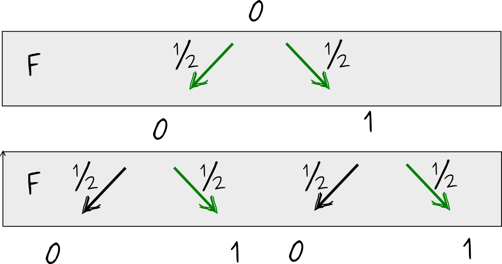
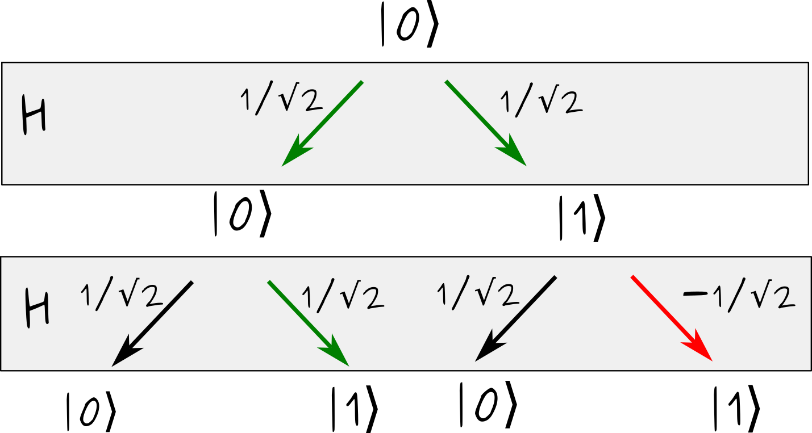
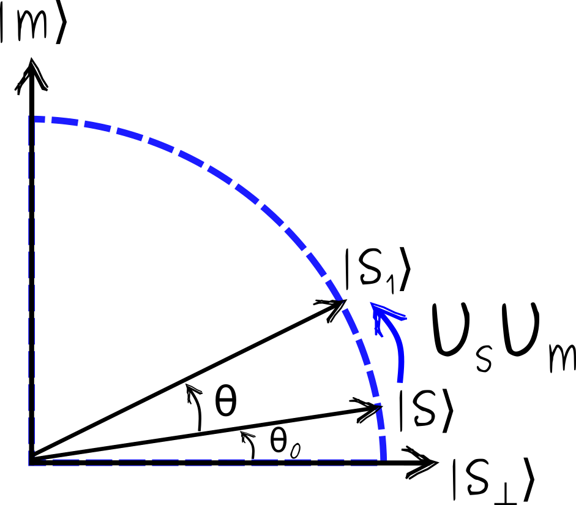

Intro
In this post, I try to explain why quantum computers can be more powerful than classical. And I aim for an explanation “as simple as possible but no simpler”. I don’t think this is doable without any math, but I will only rely on a minimal background in linear algebra, basic probability, and elementary complexity theory (understanding why an algorithm taking \(\sqrt{N}\) steps is better than the one taking \(N\) steps suffices). There are two points to address.
- Why a classical computer can not efficiently reproduce, i.e. simulate, an arbitrary quantum computation?
- Why some of these quantum computations solve useful problems?
To make quantum computing of general interest, you really need both.
Quantum computing is not really about physics. Rather, quantum mechanics can be understood as a generalization of the probability theory. Standard probability theory deals with probabilities, which are positive numbers. Quantum mechanics instead deals with probability amplitudes. Probability amplitudes, when squared, give proper probabilities. But amplitudes can be both positive or negative (or even complex numbers, but this won’t matter much). In a sense, all quantum weirdness can be attributed to this seemingly superficial distinction.
There is more than one way to highlight the difference between classical and quantum. Comparing them head-to-head is tricky, simply because we usually use very different language to describe the two. Here, I will focus on comparing quantum mechanics with classical probability theory. Some features often perceived as unique to quantum systems, such as the exponentially large state space, are in fact present in probabilistic systems as well. Overall, it makes for a fairer apples-to-apples kind of comparison.
Qubits, superposition, and amplitudes
Classical computers manipulate classical bits, i.e. systems that can be in one of two states, \(0\) or \(1\). Quantum computers manipulate quantum bits, or qubits. Similarly to a classical bit, a qubit can be in two states, denoted by \(|0\rangle\) and \(|1\rangle\). However, a qubit can also be in a state described by an (almost) arbitrary linear combination
\[\begin{align} |\psi\rangle = a_0 |0\rangle+a_1 |1\rangle \ . \end{align}\]
The states \(|0\rangle\) and \(|1\rangle\) should be thought of as two orthogonal two-dimensional vectors. For instance, in explicit computations one often sets \(|0\rangle = \begin{pmatrix} 1 \\ 0\end{pmatrix}, |1\rangle = \begin{pmatrix} 0 \\ 1\end{pmatrix}\). Also, notation \(|\cdot\rangle\) is nothing more than an unusual notation for a vector. We could have just denoted the states of a qubit by \(\vec{0}\) and \(\vec{1}\), but I’ll keep the fancy Dirac notation.
In the quantum jargon, a linear combination of \(|0\rangle\) and \(|1\rangle\) is called a superposition. The superposition principle states that (almost) any vector in the state space, i.e. any linear combination of \(|0\rangle\) and \(|1\rangle\) is a valid state. The coefficients \(a_0\) and \(a_1\), called amplitudes, can be positive or negative. (They can even be complex numbers, but negative amplitudes are sufficient to summon the quantum magic.)
Probabilistic interpretation of superposition
Alright, but what does it mean for a qubit to be in a superposition of \(|0\rangle\) and \(|1\rangle\)? In many ways, it is similar to saying that there is some probability that the qubit is in state \(|0\rangle\), and some probability it is in state \(|1\rangle\). Yet, there are crucial differences between a superposition, and a classical probability distribution, that eventually lead to the quantum speedups.
Let’s first discuss the similarities. Given a qubit in state \(|\psi\rangle=a_0|0\rangle+a_1|1\rangle\), we can measure it. The measurement result is a simple definite state of the qubit, either \(|0\rangle\) or \(|1\rangle\). But the outcome is probabilistic. We get state \(|0\rangle\) with probability \(p_0=|a_0|^2\), and state \(|1\rangle\) with probability \(p_1=|a_1|^2\). Naturally, a valid quantum state must have \(p_0+p_1=1\). Any two amplitudes \(a_0\) and \(a_1\) satisfying \(|a_0|^2+|a_1|^2=1\) define a valid state of a qubit. Geometrically, this means that valid quantum states have unit length.
If the only thing we do to state \(|\psi\rangle=a_0|0\rangle+a_1|1\rangle\) is the measurement, then it is virtually indistinguishable from a probabilistic bit, which is \(0\) with probability \(p_0\) and \(1\) with probability \(p_1\).
Note also, that as far as only the measurement results are concerned, all four states of the form \(|\psi\rangle=\pm a_0|0\rangle\pm a_1|1\rangle\) are also indistinguishable.
Quantum mechanics is a theory of amplitudes
Now for the differences between a superposition and a probability distribution. Quantum mechanics is fundamentally a theory of amplitudes. While amplitudes give rise to probabilities of measurement outcomes, the amplitudes are primary. Quantum computations, and more generally quantum processes, transform amplitudes. You can not reduce quantum amplitudes to the probabilities they represent. In this section, I will give a simple example illustrating the crucial difference.
Quantum processes
Before going to the example, we need to discuss how quantum states change when we do something to them. A simple answer is as follows. Quantum states are vectors, and quantum processes are matrices acting on these vectors. The matrices need to be orthogonal (or unitary, in the general case), i.e. geometrically they represent rotations. For a single qubit, which is described by a two-dimensional vector, (almost) any quantum process can be represented by a simple matrix
\[\begin{align} U = \begin{pmatrix}\cos\theta & -\sin\theta \\ \sin\theta & \cos\theta \end{pmatrix} \ . \end{align}\]
In Dirac notation this is equivalent to
\[\begin{align} U|0\rangle = \cos\theta |0\rangle-\sin\theta |1\rangle,\quad U|1\rangle = \sin\theta |0\rangle+\cos\theta |1\rangle \ . \end{align}\]
These processes are often called quantum gates, by analogy with classical logic gates. For instance, setting \(\theta=\frac{\pi}{2}\) we get a transformation \(U|0\rangle=-|1\rangle, U|1\rangle=|0\rangle\), which is very similar to the classical \(NOT\) gate.
Though not strictly necessary for what follows, I’ll try to motivate why quantum processes should be like that. That quantum processes must be rotations of state vectors is a consequence of the following assumptions.
- Quantum processes must be linear. This means, that \(U\left(a_0|0\rangle+a_1|1\rangle\right)=a_0U|0\rangle+a_1U|1\rangle\).
- They should preserve the length of the state vectors.
- They must be reversible.
The assumption of linearity is very natural, and closely parallels the linearity of classical probability. Preserving the length of the state vector is necessary, because state vectors with non-unit length do not describe valid probability distributions. The last assumption of reversibility is a bit more subtle to explain. My point is that is a convenience, rather than a necessity.
In principle, all processes in the physical world are reversible, either quantum or classical. Irreversibility appears when we discard some information. For example, an operation that resets the bit to value 0, is irreversible, because it “forgets” the initial state of the bit. But you can reset the state of a qubit to \(|0\rangle\) just as well, and that would be an irreversible operation. (Simply measure that state of the qubit, and if it turns our \(|1\rangle\), apply \(NOT\) gate to it.)
For some reason, it is customary to use irreversible logic gates, such as AND or OR, in classical computing, but restrict to reversible logic gates in quantum computing. (In fact, it is possible to make any classical computation using reversible gates only.) My main point here is that this distinction is not fundamental.
Bit flipping
Now we are ready to explain by example how transforming probability amplitudes is fundamentally different from transforming probabilities.
Let’s call \(F\) a procedure of taking a classical bit, and randomly flipping it. Say the bit was initially in \(0\). After flipping, it is \(0\) or \(1\) with equal probability, i.e. \(p_0=p_1=\frac12\). Let’s apply \(F\) once more, e.g. flip the bit the second time. This results in the following possibility tree.

There are two ways that the final state of the bit can turn out \(1\). The first is that the bit transitioned \(0\to 0 \to 1\) and the second is a through a sequence \(0 \to 1 \to 1\). Each “history” or trajectory has probability \(\frac14 =\frac12\times\frac12\), so that the total probability to find the bit in state \(1\) after applying \(F\) twice is \(\frac12=\frac14+\frac14\).
Qubit flipping
Here is a quantum version of this scenario. There is a process called the Hadamard gate, denoted by \(H\), which acts as follows
\[\begin{align} H|0\rangle = |+\rangle := \frac1{\sqrt{2}}\left(|0\rangle + |1\rangle\right), \quad H|1\rangle = |-\rangle := \frac1{\sqrt{2}}\left(|0\rangle - |1\rangle\right) \ . \end{align}\]
In words, \(H\) takes state \(|0\rangle\) to state \(|+\rangle\), proportional to the sum of \(|0\rangle\) and \(|1\rangle\), and takes \(|1\rangle\) to \(|-\rangle\), the state proportional to their difference. The factors \(\frac1{\sqrt{2}}\) ensure that amplitudes squared sum to one. Nota that \(H\) gate is a rotation by angle \(\theta=-\frac{\pi}{4}\).
If we simply measure them, the states \(|+\rangle\) and \(|-\rangle\) are indistinguishable from each other. Both yield \(|0\rangle\) and \(|1\rangle\) with equal probabilities \(p_0=p_1=\frac12\). That’s why I say that \(H\) is similar to our classical bit-flipping operation \(F\).
However, when applied twice, \(H\) maps \(|0\rangle\) back onto itself, indeed \[\begin{align} H^2 |0\rangle=H \frac1{\sqrt{2}}\left(|0\rangle + |1\rangle\right) = \frac1{\sqrt{2}}\left(\frac{|0\rangle+|1\rangle}{\sqrt{2}}+\frac{|0\rangle-|1\rangle}{\sqrt{2}}\right)=|0\rangle \ . \end{align}\] There is no chance that the final state turns out \(|1\rangle\).
Let’s illustrate this graphically, using the same tree of possible trajectories.

Now the transitions are labeled by their amplitudes, instead of probabilities. As before, there are two ways to end up in state \(|1\rangle\), one going through intermediate state \(|0\rangle\), and one going through \(|1\rangle\). The amplitudes of these trajectories, however, have opposite signs, \(\frac12 = \frac1{\sqrt{2}}\times \frac1{\sqrt{2}}\) and \(-\frac12=\frac1{\sqrt{2}}\times (-\frac1{\sqrt{2}})\), respectively. This makes the total amplitude, end hence the total probability, to end up in state \(|1\rangle\) vanishing.
Amplitudes cancel, probabilities do not
This is the key difference between classical and quantum. For a classical probabilistic process, the probabilities of different trajectories sum up. In other words, if there are several possibilities to reach an end state, they reinforce each other. In a quantum process, it is the amplitudes that sum up, and they can cancel each other. The fact that there is some trajectory (with a non-zero amplitude) leading to some end state, does not mean that this end state is in fact reachable. The amplitude of this trajectory can be canceled by others. This is known as a quantum interference. (If you are familiar, this is what the famous two-slit experiment shows. Opening up a new slit for particles to pass through can decrease their chances of getting to a particular end point.)
Quantum states and processes
Before discussing why amplitude cancelling can lead to quantum speedups, I will address two technical points.
I don’t understand your \(H\) gate
You may find our discussion of the \(H\) gate unmotivated or unnatural. Why is this gate defined the way it does? What does it mean?
The \(H\) gate was only used to give a simple illustration of quantum interference. We could have used almost any other quantum process instead. A probabilistic classical processes only needs to preserve the total probability, and the same is true for a quantum process. More precisely, a quantum process needs to be linear and preserve the property that the squares of the amplitudes sum up to one. The \(H\) gate has this property, it is a simple and valid quantum process. Mathematically, it is a unitary matrix \(H=\frac1{\sqrt{2}}\begin{pmatrix}1 & 1 \\ 1 & -1\end{pmatrix}\). Conversely, any unitary matrix represents a quantum process. Almost all unitary matrices feature negative or complex entries, and hence exhibit the amplitude-cancelling behavior.
Here is yet another way to introduce \(H\) gate. Any classical boolean function (i.e. a classical computation) can be expressed as a sequence of simple gates. For example, NAND [ref] gate is universal, meaning that an arbitrary classical computation can be expressed as a sequence of NAND gates alone. Probably a less familiar option is the Toffoli gate [ref], which takes three bits as an input, and inverts the third bit if the first two bits are “on”. The Toffoli gate is universal for classical computation, and has the nice property that it is reversible (and in particular is its own inverse). Reversible classical gates can be easily implemented on a quantum computer. However, the Toffoli gate is not universal for quantum computation. Indeed, it merely shuffles the bitstings, and can not create a superposition like \(|+\rangle\). However, supplementing the Toffoli gate with (almost) any other quantum gate that can create superpositions makes for a universal gate set. In particular, Toffoli+H is a universal quantum gate set. So in a sense, \(H\) gate can capture all the quantumness there is. (Note however, that this is true for almost any other choice of an additional gate.)
States of many qubits
A general state of three qubits can be written as
\[\begin{align} |\psi\rangle = a_{000}|000\rangle + a_{001}|001\rangle+a_{010}|010\rangle+a_{011}|011\rangle+a_{100}|100\rangle + a_{101}|101\rangle+a_{110}|110\rangle+a_{111}|111\rangle \ . \end{align}\]
Notation \(|x_1x_2x_3\rangle\) is a shorthand for saying that the first qubit is in state \(|x_1\rangle\), the second in state \(|x_2\rangle\), and the third in state \(|x_3\rangle\). The amplitudes here have the same meaning as for a single qubit. For instance, \(|a_{101}|^2\) is the probability to find the first and third qubits in state \(|1\rangle\), and the second qubit in state \(|0\rangle\), upon measuring. For three qubits there are \(8\) possible states, and \(8\) amplitudes. For \(n\) qubits, there are \(2^n\) possible bit-strings and \(2^n\) amplitudes (subject to the total probability equals one condition). This exponential dimension of the state space is often cited as the origin of the quantum speedups. Yet, it is only a part of the story.
Indeed, while the number of qubits \(n\) is small enough, so that the dimension of the state space \(2^n\) is manageable, any quantum process can be simulated. This is known as state-vector simulation, and it only requires being able to store and update a vector of dimension \(2^n\) (currently, up to roughly \(n=50\) qubits can be simulated by this brute-force approach.).
However, the mere exponential growth of the state space is not sufficient. We have the same growth in classical probabilistic description. Indeed, to specify the probability distribution over \(n\) classical bits, one needs to provide \(2^n\) probabilities corresponding to each possible bit string. For instance, to describe a probability distribution over three bits, one needs to specify eight probabilities \(p_{000}\) through \(p_{111}\).
Why quantum interference defies classical simulation
Now we are ready to explain why some quantum computations can not be efficiently simulated by a classical computer. Imagine a quantum computer that manipulates \(n\) qubits. It runs a quantum algorithm that outputs a quantum state. This particular algorithm produces a quantum state that is not a superposition, but a particular bitstring such as \(|\psi\rangle=|00101\dots\rangle\). This bitstring is (or encodes) the solution to our problem. (Not all quantum algorithms are like that, but some are, to a good approximation.)
You should also think of a quantum algorithm as consisting of a number of simple quantum operations. Say it is a sequence of \(H\) and Toffoli gates, which are universal for quantum computation. Mathematically, you can get the output state by taking the initial state, representing it as a vector, and applying matrices of various quantum gates constituting the algorithm to this vector. As discussed, this works for \(n\) sufficiently small, but eventually breaks down because the memory required scales exponentially.
Let’s imagine a similar scenario in a classical probabilistic world. Someone comes up with a classical probabilistic algorithm that produces a correct result with probability 1. In fact, directly simulating this algorithm by keeping track of the probabilities of different bitstrings at all steps may be equally intractable, because the number of possible bitstrings is exponentially large. But we do not need to do that. We know that the algorithm outputs the correct solution with probability one, i.e. the correct solution is reached by all trajectories having a non-zero probability. We simply need to simulate a single such trajectory, and see where it ends up. Classical probabilities don’t cancel, they reinforce each other.
This does not work for quantum amplitudes. We can certainly find a trajectory with non-zero amplitude. But there is no guarantee that this trajectory leads to the correct result, because its amplitude can get cancelled by other trajectories. Accounting for all possible trajectories, you can determine the true probability of reaching that particular end state. Of course, generally there are exponentially many trajectories, and this is not feasible. (Incidentally, this view gives a different simulation technique. Keeping track of the total state vector requires exponential memory, but is time-efficient. In contrast, the total amplitude for reaching a particular end state can be computed by summing trajectories one by one. This requires little memory, but an exponential number of steps.)
A concluding remark is in order here. Neither quantum nor classical probabilistic algorithms need to produce a definite bitsting. In general, different runs produce different results, corresponding to some probability distribution. In that case, the simulation should only be capable of producing individual outcomes, or samples, that are described by the same distribution. This is easy to achieve in the classical probabilistic case. We simply sample one trajectory at a time, period. Ultimately, this works because though we describe our system as if it could be in different states at the same time step, this only makes sense for different runs of the algorithm. During a single run a classical system can really only be in a single state at a single time.
This does not work for quantum processes. Here, it does not suffice to sample one trajectory at a time, because different trajectories can interfere. In a sense, quantum systems can really be in several states at once.
Why quantum interference leads to quantum speed ups
We saw how quantum interference is a hindrance to a classical simulation. But why is it useful? How can it lead to quantum speedups? As it is almost always the case, the best way to understand something is through examples. We will consider two quantum algorithms.
Deutsch’s algorithm
Deutsch’s algorithm is one of the first and simplest, an archetypical quantum algorithm. It may look a bit fishy though, but we’ll discuss that later. So you have a boolean function of a single bit \(f(x)\) (i.e. \(f\) takes 0 or 1 and returns 0 or 1). There are two mutually exclusive possibilities, either \(f(0)=f(1)\), or \(f(0) != f(1)\). In the first case, we call the function balanced. The goal is to find out whether \(f(0)\) is balanced.
Here is the suspicious part. The inner workings of \(f\), its “source code”, is not available to us. We can only query this function, i.e. provide it with inputs and observe outputs. In complexity theory lingo we have oracular access to \(f\), i.e. we can query it, but can’t look inside.
How many queries to \(f\) should we make to figure out if \(f(0)\) is the same as \(f(1)\)? Right, two queries, one to find \(f(0)\) and another to find \(f(1)\), there is no other way.
Turns out, we can solve the problem with a single query on a quantum computer. For this we need a quantum version of the oracle, denoted by \(U_f\). It should work as follows
\[\begin{align} U_f|x\rangle = (-1)^{f(x)}|x\rangle \ , \end{align}\]
i.e. the oracle reverses the sign of a state \(|x\rangle\) if \(f(x)=1\). This definition might look a bit unnatural. A more obvious choice would be to say that the oracle acts by \(\widetilde{U}_f|x\rangle = |f(x)\rangle\). The problem is, if \(f(0)=f(1)\) this \(\widetilde{U}_f\) is not reversible, which is a problem for a quantum computer. \(U_f\), on the other hand, is always reversible. While the definition of \(U_f\) may not be the first thing that comes to mind, it’s really the simplest way to define a transformation that treats states with \(f(x)=0\) and \(f(x)=1\) differently, while being reversible.
One of the key properties of quantum mechanics that I may not have emphasized enough is linearity. If \(U_f\) acts the way we specified on states \(|0\rangle\) and \(|1\rangle\), it must act on a state in superposition as
\[\begin{align} U_f\left(a_0 |0\rangle+a_1|1\rangle\right) = a_0 (-1)^{f(0)}|0\rangle+a_1 (-1)^{f(1)}|1\rangle \ . \end{align}\]
We are done with preliminaries. Here is the Deutsh algorithm. Start with \(|0\rangle\) and apply \(H\) gate to it, to obtain \(|+\rangle\). Then, apply the oracle to get
\[\begin{align} U_fH|0\rangle = U_f |+\rangle = \frac1{\sqrt{2}}\left((-1)^{f(0)}|0\rangle + (-1)^{f(1)}|1\rangle\right) \end{align}\]
You see, this state sort of knows both \(f(0)\) and \(f(1)\). But this information can not be extracted directly. Simply measuring this state will give \(|0\rangle\) or \(|1\rangle\) with equal probablities, and reveal nothing about \(f\) whatsoever. The trick is to apply \(H\) once again. With a little algebra, we find
\[\begin{align} HU_fH|0\rangle = \frac12\left((-1)^{f(0)}+(-1)^{f(1)}\right)|0\rangle+\frac12\left((-1)^{f(0)}-(-1)^{f(1)}\right)|1\rangle \ . \end{align}\]
This expression may look complicated, but is in fact trivial. For balanced functions only the first term survives, so that the final state is \(\pm|0\rangle\), while for unbalanced functions the first term disappears, leaving us with \(\pm |1\rangle\). Hence, measuring the final state allows us to decide whether the function is balanced or not. And the final state is produced using a single query to the quantum oracle \(U_f\). Note that the crucial part of the computation is quantum interference, the cancellation between different trajectories. For balanced functions \(U_f\) is equivalent to the identity, and the amplitude of getting \(|1\rangle\) in the end state is vanishing, just as we’ve seen before for \(H\) gate applied twice. The twist is that for the unbalanced functions the situation is opposite.
The Deutsch algorithm solves an artificial problem and has no applications. Hiding some trivial function \(f\) (after all, there are only four one-bit boolean functions!) behind a magic oracle looks silly. The techniques used still have their point though, but this is best illustrated for a more realistic example, that we now turn to.
Grover’s algorithm
Quantum search
Grover’s algorithm is one of the oldest, most famous, and simplest to explain quantum algorithms. It is often described as a quantum search.
Suppose there is a problem with a very large yet finite number of potential solutions, and you know no better way to find the right one other than trying all available options one by one. An example often given is trying to find a name of a person in a phone book, only knowing the phone number.
Mathematically, let \(f\) be a boolean function of \(n\) bits \(f(x_1, \dots, x_n)\). The goal is to find an assignment of bits that makes \(f(x_1,\dots, x_n)=1\). For simplicity, assume that such an assignment is unique, and call the corresponding solution \(m=(x_1,\dots, x_n)\), \(m\) for marked state.
In the standard setting of Grover’s algorithm we only have oracular access to \(f\), i.e. we can provide it with inputs and observe outputs. (We will move beyond oracles, eventually.) In that case, there is nothing better we can do except for trying all of \(2^n\) possible bitstrings \((x_1,\dots, x_n)\) one by one, and see which one works. Let’s denote the total number of bitstrings by \(N=2^n\). On average, classical brute-force search takes \(N/2\) queries to \(f\).
Grover’s oracle
Grover’s algorithm allows solving this search problem with only \(\sim \sqrt{N}\) queries to the quantum oracle, a quadratic speedup relative to the classical search. Recall that an oracle \(U_m\) for state \(|m\rangle\) is some function that differentiates this state from the rest. There may be different yet equivalent ways to define such an oracle. Perhaps, the most convenient one is
\[\begin{align} U_m|x\rangle = (-1)^{f(x)} |x\rangle = \begin{cases} -|m\rangle,\quad x=m \\ {\,\,\,\,\,}|x\rangle,\quad else \end{cases} \ , \end{align}\]
i.e. the oracle that reverses the sign of the marked stated \(|m\rangle\), does nothing to the rest. To be sure, there is no quantum magic at this step, just a simple definition.
The initial state
In the first step of Grover’s algorithm (and in fact in many others) we prepare a state
\[\begin{align} |s\rangle = \frac1{\sqrt{N}}\sum_x |x\rangle \ , \end{align}\] which is a superposition of all possible bitstrings with equal amplitudes. Here are some examples. For \(n=1\) state \(|s\rangle\) is the same as state \(|+\rangle\) we’ve met before. For \(n=2\) we have \(|s\rangle = \frac12\left(|00\rangle+|01\rangle+|10\rangle+|11\rangle \right)\).
State \(|s\rangle\) may look complicated, but it is easy to prepare. Simply apply \(H\) gate to all qubits initialized in \(|0\rangle\). For instance, for \(n=2\) we have \(H|0\rangle H|0\rangle = \frac1{\sqrt{2}}\left(|0\rangle+|1\rangle\right)\frac1{\sqrt{2}}\left(|0\rangle+|1\rangle\right)=\frac12\left(|00\rangle+|01\rangle+|10\rangle+|11\rangle \right)=|s\rangle\). There is a simple probabilistic analog of this state – a state of \(n\) classical bits with any bitstring configuration being equally likely. And this probabilistic version is equally simple to prepare, just flip every bit randomly.
Reflections
Grover’s oracle \(U_m\) has a simple geometric interpretation. Acting on any state \(|\psi\rangle\), it inverts its component along the marked state \(|m\rangle\). This is nothing but a reflection with respect to the hyperplane orthogonal to \(|m\rangle\). Thus, Grover’s oracle is a reflection in state space.
The final ingredient to Grover’s algorithm is a second reflection, around state \(|s\rangle\), which we denote by \(U_s\). I emhphasize that \(|s\rangle\) is a known state, which is easy to prepare. I will omit the details, but applying the corresponding reflection operator \(U_s\) is straightforward and efficient.
Two-dimensional subspace
A neat feature of the Grover algorithm is that although it formally operates in an exponentially large space, the state of a system never escapes a two-dimensional subspace spanned by vectors \(|m\rangle\) and \(|s\rangle\). Note that states \(|m\rangle\) and \(|s\rangle\) are not completely orthogonal, as \(|s\rangle\) contains a small component along \(|m\rangle\) with amplitude \(a_m=\frac1{\sqrt{N}}\). It is convenient to define state \(|s_\perp\rangle\), which is equal to \(|s\rangle\) minus the component along \(|m\rangle\), and normalized to have unit length
\[\begin{align} |s_\perp\rangle = \sqrt{\frac{N}{N-1}}\left(|s\rangle - \frac{|m\rangle}{\sqrt{N}}\right) \ . \end{align}\]
Grover’s algorithm is a sequence of small rotations
So here is how Grover’s algorithm works. Start in state \(|s\rangle\), and apply two reflections, first \(U_m\), then \(U_s\). A combination of two reflections is a rotation, and turns out this is a rotation towards the marked state \(|m\rangle\), schematically illustrated at the following picture

(Here \(|s_1\rangle=U_sU_m|s\rangle\) is the state after the first iteration of the algorithm).
What is the angle \(\theta\), i.e. how much do we rotate during a single iteration? If \(U_sU_m\) is indeed a rotation by angle \(\theta\) in the basis \(|s_\perp\rangle, |m\rangle\), we have
\[\begin{align} -U_sU_m |m\rangle = \cos \theta |m\rangle +\sin \theta |s_\perp\rangle \ . \end{align}\]
So, to find \(\theta\) it suffices to apply \(U_sU_m\) to \(|m\rangle\), and take the component along \(|m\rangle\). We get \(-U_s U_m |m\rangle = U_s|m\rangle = |m\rangle - \frac{2}{\sqrt{N}}|s\rangle\). In the last step we used that the scalar product (amplitude) between \(|m\rangle\) and \(|s\rangle\) is \(\frac{1}{\sqrt{N}}\). Using this property once again, we find the projection of the resulting state on \(|m\rangle\)
\[\begin{align} \cos\theta = 1-\frac{2}{N},\qquad \theta \approx \frac{2}{\sqrt{N}} \qquad (\text{for large $N$}) \ . \end{align}\]
That’s it! A single iteration of Grover’s algorithm rotates the initial state towards \(|m\rangle\) by angle \(\theta\approx \frac{2}{\sqrt{N}}\). To reach the marked state \(|m\rangle\), we need to make the sequence of these small rotations that combine into a \(\frac{\pi}{2}\) rotation, and the required number of iterations \(k\), which are all identical, is (roughly)
\[\begin{align} k = \frac{\pi}{2 \theta} = \frac{\pi \sqrt{N}}{4} \ . \end{align}\] You see the \(\sqrt{N}\) dependence right there, and this is surely better asymptotically than any classical algorithm can do. (Incidentally, no quantum algorithm can beat \(\sqrt{N}\) for unstructured search as well.)
I glossed over many details here, such as explaining how to construct \(U_s\), proving why \(U_sU_m\) is a rotation in 2d subspace, finding the exact value of \(k\) which has edge-cases, etc. However, these are merely technical details, and if you followed along, you now understand the main idea behind Grover’s.
Infinitesimal quantum speedup
Let’s now try to trace the speedup provided by Grover’s algorithm to quantum interference. For this, I’ll look at a single iteration alone, which already provides a kind of quantum speedup.
Here is what I mean. Suppose you are only allowed to call the oracle once. How much does that increases your chances of finding the marked element? Classically, the best thing you can do is to call the oracle on a random input. If it turns out to be the solution, which happends with probability \(\frac1N\), you are done. If not, which happens with probability \(\frac{N-1}{N}\), you make a guess at some other of \(N-1\) remaining bitstrings, which succeeds with probability \(\frac{1}{N-1}\). The total probability of success is
\[\begin{align} p = \frac1{N}+\frac{N-1}{N}\frac1{N-1}= \frac{2}{N} \ . \end{align}\]
This is basically equivalent to being able to guess twice.
Now, using a single call to the quantum oracle is equivalent to making 9 classical guesses! Indeed, recall that we begin in a state \(|s\rangle\), which contains every bitstring with amplitude \(\frac{1}{\sqrt{N}}\). Measuring \(|s\rangle\) directly results it probability \(\frac{1}{N}\) of finding the marked state \(m\), which is no better than a simple classical guess. The angle between \(|s\rangle\) and \(|m\rangle\) has \(\sin\theta_0=\frac{1}{\sqrt{N}}\), or \(\theta_0\approx \frac{1}{\sqrt{N}}\) (you may wish to revisit the picture above). After a single iteration of Grover’s algorithm, the angle becomes \(\theta_0+\theta\approx \frac{3}{\sqrt{N}}\), which means that measuring this state now has probability \(\frac{9}{N}\) to output the marked state.
Quantum interference
Moving beyond oracles
States \(|m\rangle\) and \(|s_\perp\rangle\) are unknown to us, while \(|s\rangle\) is a known and simple to prepare state. The final Grover’s speed up is modest but rock-solid.
FAQ
- So, why are quantum computers powerful
- Why no electrons
- Why no entanglement
- What are useful quantum algorithms
- Cost of error correction
- When quantum computers will be used to train LLM?
- Of course, I only argued why one particular way of simulating works for classical probabilistic processes, but does not apply to quantum computations. Rigorously proving that quantum systems can not be simulated by any classical method is beyond our scope [BQP?]
Introduction
Why can quantum computers be powerful?
So there are quantum computers. At least there will be, we believe. And the reason to build them is an expectation that they will solve some problems intractable for the classical computers. It is a new way to process information, a new way to do computation.
However, it is surprisingly difficult to pinpoint the exact mechanism underlying the capabilities of a quantum computer. Most of the simplistic explanations, referencing some unusual property of quantum systems such as entanglement, superposition etc, are incomplete at best. It is hard to compare classical and quantum head-to-head, because of the very different language used to describe them.
In this post, I will try to make a fair comparison and zoom in on the essential differences. As an experiment, I will try to cover the topic in a way accessible for people outside the field, striving to provide an explanation that is “as simple as possible, but no simpler”. The discussion still won’t be entirely non-technical, though, and use some basic probability and linear algebra.
So, why can’t an arbitrary quantum computation be efficiently simulated classically? And what does that even mean?
Qubits and p-bits
A classical bit can be either \(0\) or \(1\). Similarly, a qubit (quantum bit) can be \(\bf{0}\) or \(\bf{1}\). But crucially, a qubit can also be in any state of the form \[\pmb{s}=a_0 \pmb{0}+a_1 \pmb{1} \ .\]
Mathematically, states \(\pmb{0}\) and \(\pmb{1}\) are vectors, and (almost) any linear combination of them is a valid state of a qubit. In quantum mechanics a linear combination is called a superposition.
What does it mean for a qubit to be in state \(\pmb{s}\)? It means that if you look at it, or make a measurement in quantum-mechanical jargon, you will see \(\pmb{0}\) with probability \(p_0=|a_0|^2\) or \(\pmb{1}\) with probability \(p_1=|a_1|^2\).
From this point of view, a qubit in state \(\pmb{s}\) is indistinguishable from a pbit (probabilistic) bit that is in the state \(0\) with probability \(p_0\) and state \(1\) with probability \(p_1\).
Comparison between p-bits and qubits is very natural, yet often overlooked. Compare qubits to normal determinisitc bits is more apples vs oranges, because the language used to describe them is so different. P-bits, instead, share many of the properties with qubits, such as an exponentially large state space.
Quantum mechanics is a theory of amplitudes
What is the difference between a qubit and a p-bit? Numbers \(a_0, a_1\) defining a state \(\pmb{s}\) are called amplitudes. They are similar to probabilities, yet can be negative. They can (and often are) be complex numbers, but the negative values to depart from classical computing.
The fact that some quantity can be negative and it is the reason for quantum magic may sound a bit silly, but this is one of the ways to clearly state how quantum and classical differs. Eventually, it can be interpreted that quantum systems can be in several plcaes at the same time in a qualitatevly different way, compared with probabilistic classical systems.
The Hadamard gate
Quantum processes transform quantum states. Importantly, they operate on amplitudes, not on probabilities. Trying to interpret a quantum as something that simply changes an underlying probability distribution does not work.
Here is a quantum operation, known as the Hadamard gate.
\[\begin{align} \pmb{+}=H\circ \pmb{0} = \frac{1}{\sqrt{2}}\left(\pmb{0}+\pmb{1}\right) \ ,\\ \pmb{-}=H\circ \pmb{1} = \frac{1}{\sqrt{2}}\left(\pmb{0}-\pmb{1}\right) \ . \end{align}\]
In words, it is a linear operation that takes \(\pmb{0}\) to sum \(\pmb{0}+\pmb{1}\), and takes \(\pmb{1}\) to difference \(\pmb{0}-\pmb{1}\). The factors \(\frac1{\sqrt{2}}\) are needed to ensure that the total probability is 1. If you measure the state \(|+\rangle\) you get \(|0\rangle\) or \(|1\rangle\) with the same probability \(\frac12\). The same holds for \(|-\rangle\), i.e. states \(|\pm\rangle\) are indistinguishable from this point of view.
There is a simple classical analog to the Hadamard transformation – a coin flip, which I will cal \(C\)! Indeed, independent of the initial state, a fair flip of a fair coin will produce a p-bit which is equally likely to be 0 and 1. Can you interpret the Hadamard transform in the same way? No, not really. If you apply the Hadamard transform twice, it will be very different from two coin flips.
Indeed, applying \(C\) the second time does nothing, and you are still maximally uncertain about the state of your bit. However, applying the Hadamard transform twice gives you back the original state! For instance
\[H^2|0\rangle=H|+\rangle = \frac{1}{\sqrt{2}}\left(H|0\rangle+H|1\rangle\right)=\frac{1}{2}\left(|0\rangle+|1\rangle+|0\rangle-|1\rangle\right)= |0\rangle \ .\]
Similarly, \(H^2 |1\rangle=|1\rangle\).
This does not make sense if you try interpreting \(H\) in purely probabilistic terms. Classically, if there is a probability to first go from A to B, and then there is a probability to go from B to C, there must be a probability to end up in C having started in A. This is because to get the probability \(p(A\to C)\) you sum intermediate probabilities, which can not be negative, so \[p(A\to C)=p(A\to B)p(B\to C)+\dots \ge p(A\to B)p(B\to C) \ . \]
But why can’t we simulate the amplitudes
One often hears that the state space of many qubits is exponentially large, and hence can not be simulated classically. While necessary, this is not sufficient.
A state of \(n\) qubits is described by \(2^n\) (complex) numbers, each being an aplitude of a particular bit configuration. E.g. for three qubits there are 8 amplitudes
\[|\psi\rangle = a_{000}|000\rangle + a_{001}|001\rangle+a_{010}|010\rangle+a_{011}|011\rangle+a_{100}|100\rangle + a_{101}|101\rangle+a_{110}|110\rangle+a_{111}|111\rangle\]
However, the state space of probabilistic classical bits is exponentially large as well. There are \(2^n\) possible configurations of \(n\) classical bits, each having an associated probability. E.g. for three bits we need to specify \(p_{000}\) trough \(p_{111}\) to specify the probability distribution.
Namely, if you have \(n\) p-bits, to fully describe the state of the system you need to specify the probability of each configuration, such as \(p_{1010001\dots}\), and there are \(2^n\) such probabilities (yes, there are only \(2^n-1\) independent ones, as the total should be one, but don’t be picky). Yet, we can efficiently simulate probabilistic processes.
By a probabilistic process I mean a series of transformation steps, each of which can have randomness to it. Say at first we randomly flip the first bit. Then we reverse the value of the second bit, but only if first bit is 1. While this is a deterministic operation, it will make the state of the second qubit uncertain, because it is now conditioned on the state of the first randomly flipped bit. And so on. While this does not look like a code in python, it is a valid model of probabilistic computation, which looks similar to gate-based quantum computation.
Compose enough of such simple steps, and the complexity of the resulting probability distribution can be high. I.e. the probabilities of any
This is because we do not need to keep track of the exponential number of trajectories to get from the initial to the final state. We can simply sample individual trajectories. You should think of a probabilistic process as a sequence of probabilistic changes to the state of the system. For example, if step number 100 requires flipping the last bit, it gives rise to two new possibilities (one where the last bit is 0, and another where it is 1). But we can simply choose 0 or 1 for the last bit at random, and ignore the other option. Doing this for all steps making up the probabilistic process, we obtain a final sample. Repeating this procedure many time over, produces samples of the whole process.
This works because the classical probability simply reflects our ignorance about the exact state. But in each realization of a random process there was a single actual state at each moment, and we can simulate its transformation step by step, as described above.
This does not work for quantum processes. Here is an extreme yet practical example. Many quantum algorithms work in such a way, that by the end of the procedure, the bit string corresponding encoding the correct answer has probability close to 1. Running such an algorithm a bunch of times on a real quantum computer will result in the correct answer with very high probability.
We can sample a single trajectory and compute its amplitude, but this does not allow us to sample the from
Let’s be more precise. Say a probabilistic process (or computation) is a sequence of steps \(S_1, S_2, \dots S_k\). If we can sample from the output of each step \(S_i\) provided an input state, we can simulate the whole process. For example, say \(S_i\) consists in randomly flipping the second bit. Then, an initial state \(s_0s_1s_2\dots\) is transformed to \(s_0 0 s_1\dots\) or to \(s_0 1 s_1\dots\) with probability one half each.
And say we can do the following, given an input state \(s_i\) and a
Why? Because we can sample individual trajectories. Say you started with state \(s_0\)
in the end, each realization probabilistic process is a particular sequence of states.
in each realization of the probabilistic process Suppose a probabilistic process consists of a sequence of steps \(S\), and for each process we know how to compute the probability of going from \(s_i\) to \(s_j\).
For instance, the famous Google’s quantum supremacy experiment [cite] is first without the second. There, a quantum processor was used to produce a certain type of random numbers, which is hard to generate with a classical computer (with some reservations), but no practical applications of this random sampling are known.
On the other hand, simply coming up with a quantum algorithm that does solve some useful problem is not sufficient. It may well be that this algorithm can be efficiently simulated classically (or that a different classical algorithm solving the same problem exists).
Still, I could not resist supplementing the basic explanation with more technical stuff. Parts, encapsulated like this one, will contain more math and require some quantum background. They can be skipped without breaking the main argument, though.
And occasionally there will be something even more hardcore.
What does this mean, exactly?
I will only consider algorithms that both take as input and return as output classical data. In principle, quantum computers can take and/or return quantum information (more on that later), but classical computers can’t, so it does not make sense to compare them in this setting.
It is important to stress that quantum computers are not entirely magical. In principle, anything that can be done by a quantum computer can also be done by a classical one. However, it may take prohibitively more time and/or memory.
For instance, any process on a small enough quantum computer can be easily reproduced on a laptop. We call this a simulation (a classical simulation of a quantum computer, to be more precise).
Generically, the amount of classical resources required to simulate a quantum process scales exponentially. So while the classical simulation is always possible in principle, it may not be efficient. It should be stressed, though, that there are many non-trivial types of quantum processes that can be simulated efficiently at scale. More on that later.
To explain why a quantum computer can be more powerful than a classical, can mean addressing two questions.
- Why does the raw power of the quantum computer grow so fast? In other words, why an arbitrary quantum computation can not be simulated efficiently by a classical machine?
- Why some of the things that a quantum computer can do, but a classical can not simulate efficiently, are useful? What problems can be efficiently solved quantumly, but not classically?
In this post, I will mostly focus on the first question, i.e. try to explain what sets a generic quantum computation apart from classical. The second question, which is by all means just as important, I will only touch briefly.
The suspects
Alright, what property of quantum mechanics is responsible for the potential power of quantum computation? Shouldn’t it be easy to identify? Does it even make sense to ask this question, as the quantum mechanics is just so weird and spooky and a wave and a particle at the same time? Here are the usual suspects.
- Huge (exponentially large) dimension of the space where quantum states live.
- Quantum parallelism.
- Superposition.
- Entanglement.
- Contextuality.
Don’t worry if some concepts are unfamiliar, we will elaborate.
You can probably add more. While all these things are necessary, neither is sufficient alone. And they are also come in a package, so it may not even be consistent to keep some and discard the others. However, If I had to choose, I’d probably say it’s large state space + superposition, but this may be a matter of taste.
What is quantum computing, anyway?
It’s not really about the physics
Well, quantum computing is a way of manipulating information made possible by the laws of quantum mechanics. One way to introduce it is to go through the history of the subject, starting somewhere around Bohr’s atomic model and Einstein’s photoelectric effect and going all the way to Standard Model of particle physics and quantum gravity. While understanding the confusion of the founding fathers is probably an invaluable experience, it is a risky and time-consuming endeavor. In fact, stripped of the historical context and philosophical paradoxes, quantum physics becomes nothing but a generalization of a probability theory. The fact that this mathematical model really underpins the Universe is remarkable, but we need not and will not care much about it’s physical roots.
Quantum states
Ok, let’s start getting technical. Quantum computers manipulate quantum states. What are these? The simplest quantum system, known as a qubit (from quantum bit), has two basic states \(|0\rangle\) and \(|1\rangle\). However, it can also be in superposition of these \[|\psi\rangle=a|0\rangle+b|1\rangle \ .\] What does is mean for a qubit to be in this state? If you ask the qubit, i.e. make a measurement, it will answer “I’m \(|0\rangle\)!” with probability \(|a|^2\) and “I’m \(|1\rangle\)!”) with probability \(|b|^2\). Of course, we need to have \(|a|^2+|b|^2=1\).
In this respect, qubit in state \(|\psi\rangle\) is like an unfair coin, which lands heads with probability \(|a|^2\) and tails with probability \(|b|^2\). Importantly, this probability distribution is not a property of the qubit itself, but
Technically, \(a\) and \(b\) can be complex numbers, but for simplicity you can think they are just the usual real numbers. What is important, is that they can be negative.
- A lot of confusion about the source of quantum advantage.
- Usual suspects
- Large Hilbert space
- Entanglement
- Parallelism
- Superposition
- Simple but accurate explanation hard to come by.
- Many simplistic explanations fail because they apply to probabilistic computing as well
- Large space dimension for probabilities
- No interference
- Stochastic matrices can be simulated? Always increase entropy
- Quasi-probability distr, Wigner functions
- And then there are classical waves.
- But no exponential modes
- Entanglement is curios, but not crucial
- Entanglement ensures exploring Hilbert space
- Stabilizer circuits can be simulated
- Quantum correlations are not directly related to computational advantage
- Algorithms vs quantum circuits.
- Post a bit different, try to give as simple explanation as possible.
- Couldn’t do it, but technical parts separated.
- Takeaway.
- Dimension of the Hilbert space+superposition given a polynomial amount of qubits
- The answer not completely satisfactory, the subject is subtle.
- Mention quantum games!
Absurdly short intro to classical computing
- Classical computers manipulate states of bits
Super short intro to quantum computing
- Physics/historical way is not necessary
- Quantum physics is a generalization of probability
- Quantum states are like probability distributions
- Quantum bit – \((\alpha_0, \alpha_1)\)
- Born rule
- Space dimension of \(n\) qubits is \(2^n\)
- Quantum programs manipulate quantum states
- Act as unitary matrices
- Produce probability distributions
- End with a measurement
- Quantum circuit is a convenient model
- Each gate is a rule for updating amplitudes
Classical probabilistic processes
- State space is also huge, of the same order
Quantum speed up suspects
Humongous Hilbert space
- Necessary, as we could state-vector simulate everything otherwise. Not sufficient. Some things can be simulated anyway. Applies to probabilistic computing as well.